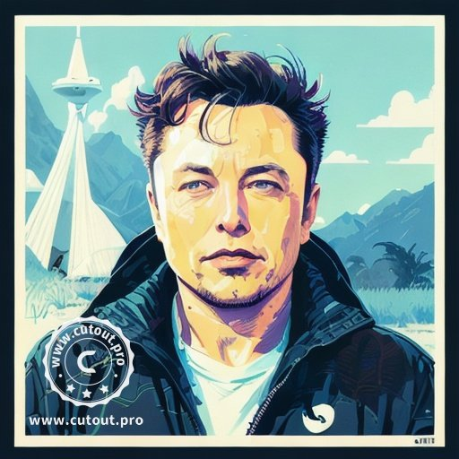

Artificial intelligence art is any artwork, particularly images and musical compositions, created through the use of artificial intelligence (AI) programs, such as text-to-image models and musical generators. It is sometimes confused with digital art. While both AI art and digital art involve the use of technology, AI art is characterize by its use of generative algorithms and deep learning techniques that can autonomously produce art without direct input from human artists.
 This the a picture made by cutout.pro. Lebron isbeautifully drawn.
This the a picture made by cutout.pro. Lebron isbeautifully drawn.

It looks cool right?(You can not say no, certainly.)
Why peoples always make memes for Elon? Good question. Because he is handsome and he he going to mars.